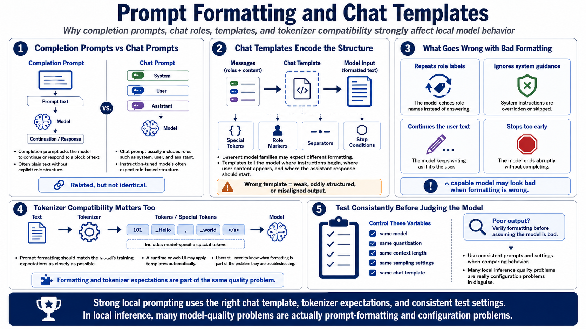

Chat, Prompt Formatting, and Templates
Connecting to LMS... Progress: in progress

Narration
Completion-style prompts and chat-style prompts are related but not identical. A completion prompt asks the model to continue or respond to a block of text. A chat prompt usually has roles such as system, user, and assistant. Many instruction-tuned models are trained with specific structures that tell the model where instructions begin, where user content appears, and where the assistant response should start.
Chat templates encode those structures. They may include special tokens, role markers, separators, or stop conditions. Different model families can expect different formatting. If the wrong template is used, a capable model may produce weak, oddly structured, or instruction-misaligned output. It may repeat role labels, ignore system guidance, continue the user's text, or stop too early.
Tokenizer compatibility is part of the same issue. The model was trained to interpret text through a specific tokenizer and set of special tokens. Prompt formatting should match that expectation as closely as possible. A runtime or web UI may apply templates automatically, but users still need to know when formatting is part of the problem they are troubleshooting.
Test prompts consistently before judging model quality. Use the same model, quantization, context length, sampling settings, and chat template when comparing behavior. If the output is poor, verify formatting before assuming the model is bad. In local inference, many quality problems are actually configuration problems wearing a convincing disguise.